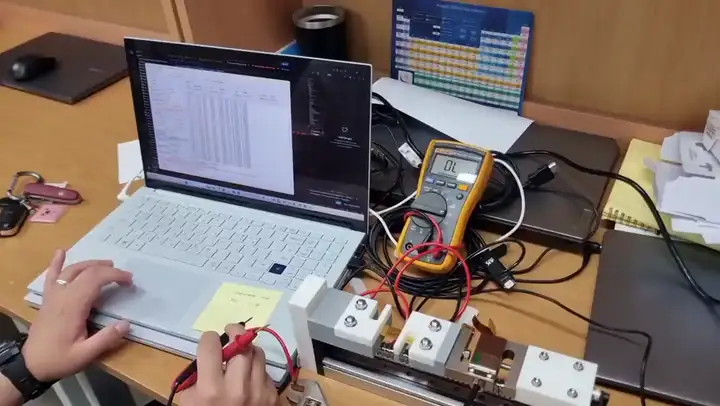
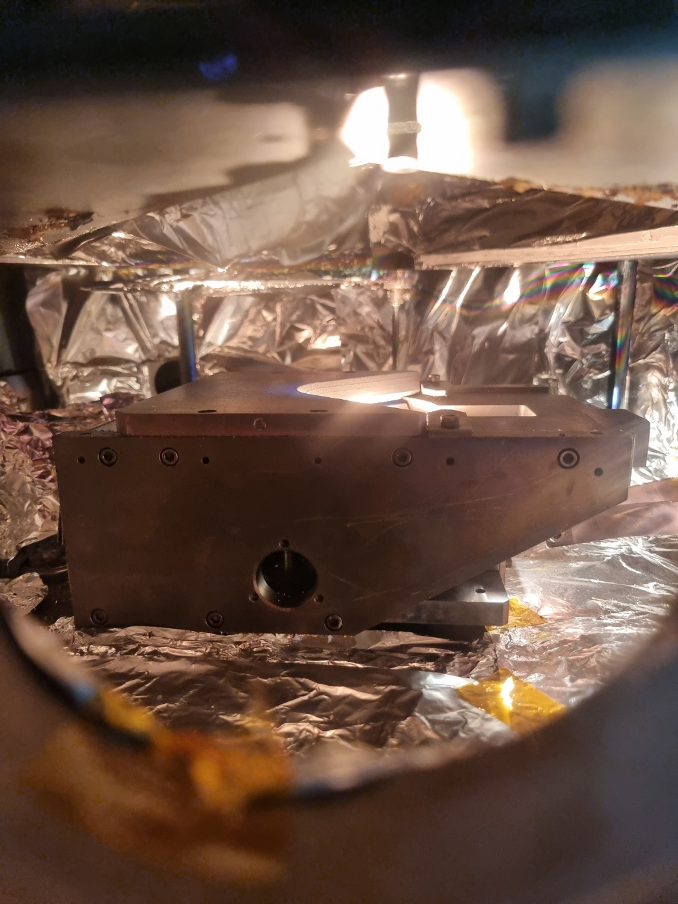

Metal/SWNT/PI Flexible Thin-Film Conductors
This project examines whether a buried SWNT mesh can serve as an engineered interphase beneath a metal thin film and help retain electrical continuity as cracks develop during tensile deformation.
Research question
How can interlayer topology and surface chemistry delay electrical failure in a metal film on a compliant PI substrate?
Work performed
Designed and fabricated the metal/SWNT/PI architecture, prepared nanotube interlayers under defined processing conditions, performed e-beam deposition, and developed a 3D-printed tensile-testing platform for synchronized resistance measurements.
Methods
E-beam evaporation, SWNT dispersion and filtration, electrical resistance-strain testing, SEM, Raman, FTIR, and quantitative crack analysis.
Current outcome
Preliminary full-cycle resistance data suggest that an intermediate SWNT loading provides the strongest retention of electrical continuity relative to the metal-only control. Current work is standardizing interlayer mass and thickness and using strain-synchronized resistance measurements and SEM crack analysis to verify the topology effect before isolating surface-chemistry contributions.

